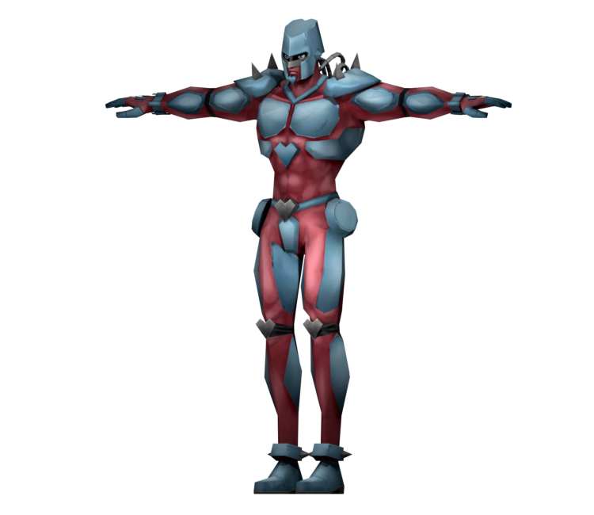

Crazy Diamond is a powerful Stand with the ability to repair objects and heal injuries.
When Crazy Diamond touches an object, it can restore it to its original state, effectively repairing any damage it has sustained.
This ability allows Josuke to fix broken items and even heal wounds on himself and others.
Additionally, Crazy Diamond can also be used offensively by manipulating objects in creative ways during combat.